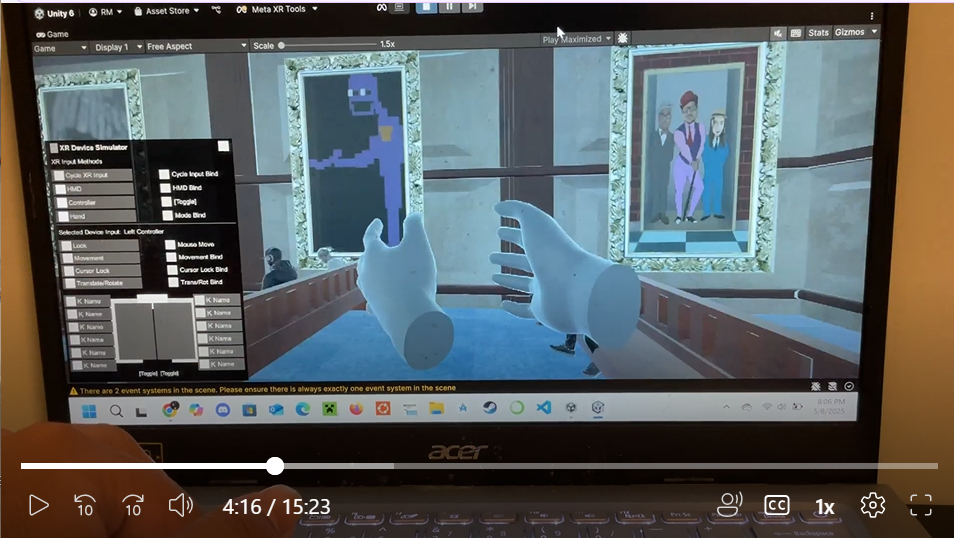
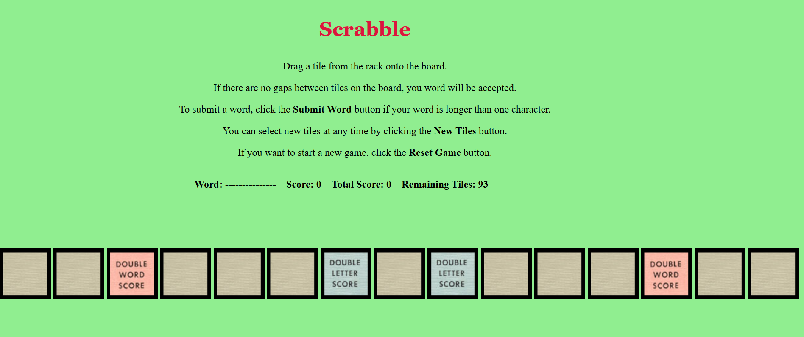
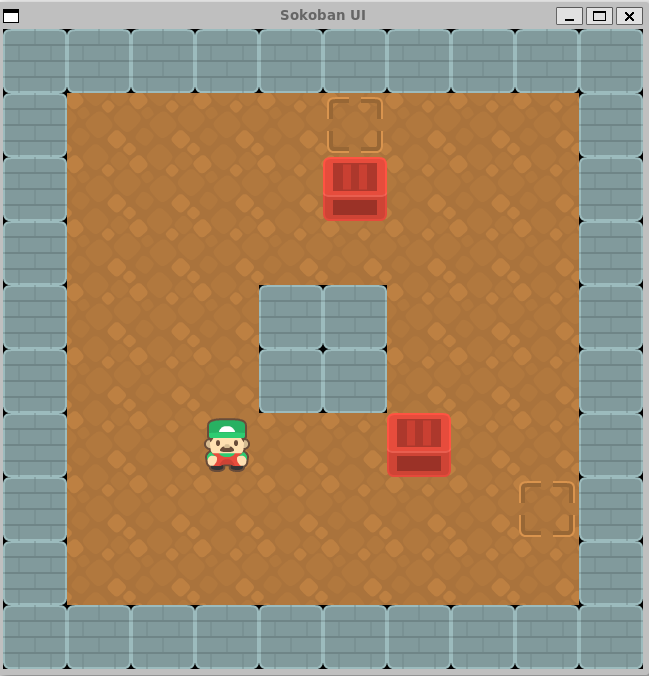

This was a project I worked on with another programmer and three artists for the Augmented & Virtual reality course taught by Dr. Maru Cabrera.
The game was a judge simulator, where you decided whether a suspect was guilty or not based on evidence. We developed this game using C# and Unity.
It has a lot of brainrot in it so be warned!
Link Not AvailableA mobile app I worked on in a team of four for our Mobile App Development II class. The purpose of our app was to help first-year students
at UMass Lowell understand the C programming language better.
We implemented features such as quizzes on topics like pointers and study modules for users to read. We implemented parts of our app
using React Native, a cross-platform framework for developing mobile apps using Typescript.
Over the course of this project, I emulated being a scrum master for our team by creating and assigning tasks to team members.
I did this using a Kanban board in our group's GitHub repository.
A mobile app I worked on in a team of four for my Mobile App Programming I class.
Our project was an Android app that allows users to input and display their purchases. I implemented the UI components needed to display the user's purchase
summary, such as a Pie Chart using the EazeGraph library and information about how much the user spent on categories such as Food, Transportation, and Bills.

This project was made for my GUI Programming I class.
A web app that loads a single line of Scrabble.
Link to Project Link to GameAn app that allows users to schedule their to-do items using AWS. I implemented a Lambda function that would invoke the front-end code
for the app and store user-entered information into a DynamoDB table.

A 2D-mini game where the player pushes boxes onto storage areas to win the level. The program read a text file made up of different symbols and drew the level
by matching the symbol with the sprite assigned to it. The player won the game if all storage areas contained boxes.
This project was made for my Computing IV class
Due to my department's "No Posting of Solution Code" Policy, I cannot share the code for this project.